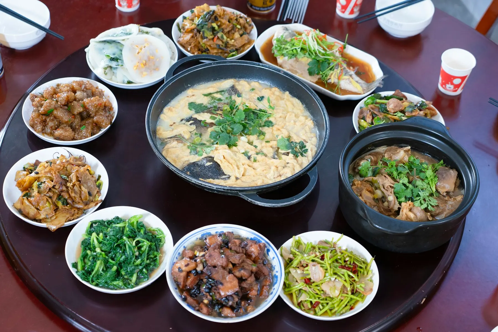
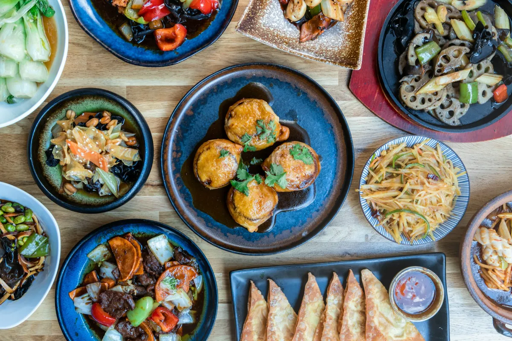
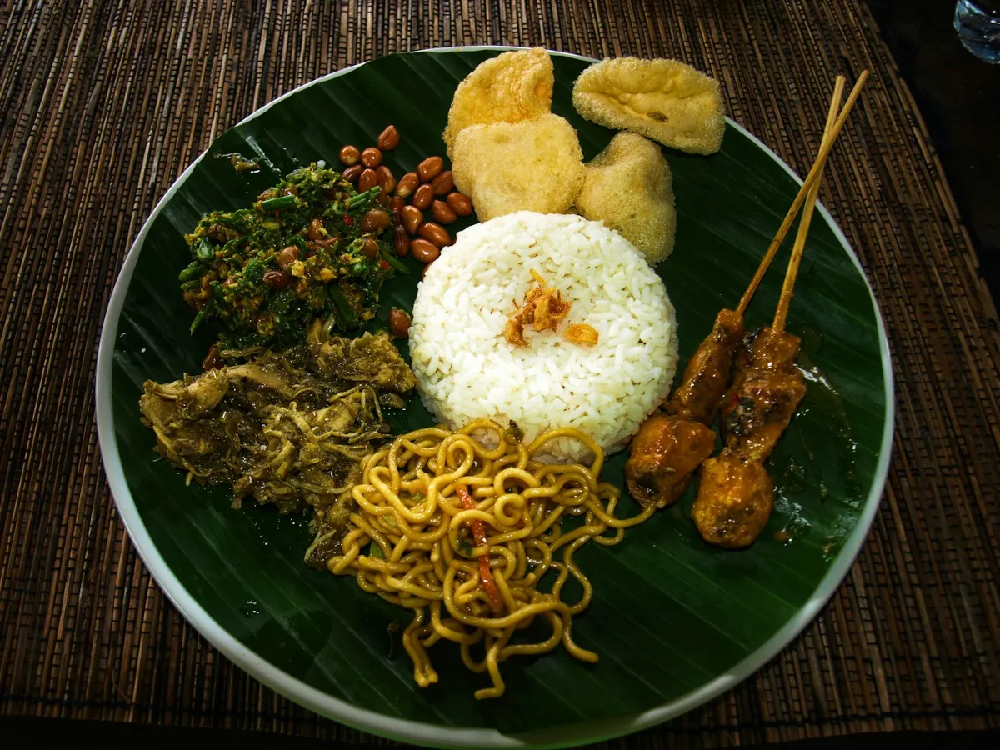
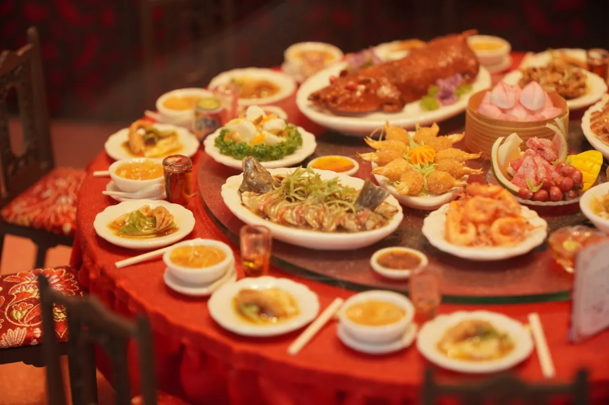

Voor 2 à 3 personen
- 6 stuks chun kun (Kantonese mini loempia)
- 3 stokjes saté ajam
- Babi pangang
- Foe yong hai
- Tjap tjoy met kipfilet
- Koe loe kai
- 1 grote bak nasi, bami of witte rijst
€ 33,50

Winkelcentrum Zwaluwenburg, Deventer-Colmschate
Chinees-Indische rijsttafels en Kantonese specialiteiten van een echt familiebedrijf. Lekker thuis, op het werk of gezellig dineren in ons restaurant.
Di t/m do 12.00 – 21.00 · vr t/m zo 11.30 – 21.30 · ma gesloten
Midden in het winkelcentrum Zwaluwenburg in Colmschate vindt u China City, een traditioneel Chinees restaurant dat al 30 jaar een begrip is in Deventer. Wij hebben een uitgebreide keuze aan gerechten uit de Chinees-Indische keuken: van de welbekende Chinese en Indische rijsttafels tot exclusieve gerechten uit de Kantonese keuken.
China City staat voor verrassende gerechten met uitsluitend verse ingrediënten, volgens traditioneel recept. Er zijn veel vleesgerechten, maar ook aan vegetariërs hebben we gedacht. Probeer ook eens onze Ti Pan gerechten met een saus naar keuze. En elke maand stellen we twee speciale menu’s samen.
China City is een echt familiebedrijf en dat merkt u in alles. Kom en ervaar de gezelligheid en de heerlijke gerechten.
Bestel in het restaurant of geef uw bestelling telefonisch door. Vooral in het weekend raden we aan om te bellen: dan maken we een inschatting van hoe lang uw bestelling nodig heeft. Advies nodig? We helpen u graag. Noem bij het bellen gewoon het nummer.
Geen gerecht gevonden. Probeer een ander woord of bel ons, dan denken we mee.
Ti pan gerechten met saus naar keuze: oesterwijnsaus, knoflooksaus, gon bao saus, pikante saus, vijfgeurige kruidensaus, pittig gekruide Maleisiësaus of zwarte bonensaus.
Met een grote bak nasi, bami of witte rijst.
Om wachttijden zoveel mogelijk te beperken doen we ons uiterste best de wachttijd goed in te schatten. Door de drukte, vooral op zon- en feestdagen, kan het uitlopen; een exact tijdstip is daarom helaas niet mogelijk. Prijswijzigingen voorbehouden.
In ons restaurant is een allergenenmenukaart aanwezig met de 14 meest voorkomende allergenen. Ons personeel kan u de kaart overhandigen en aanvullende informatie geven, zodat u met een allergie of intolerantie met een gerust hart bij ons kunt eten. Wij houden rekening met alle allergieën en intoleranties, mits dit vooraf wordt aangegeven; zo kan de receptuur van bepaalde gerechten worden aangepast. Houd er wel rekening mee dat het klaarmaken dan iets langer kan duren.
Omdat de allergenenkaart door aangepaste receptuur kan veranderen, staat hij niet online. Wilt u hem thuis op uw gemak doornemen? Stuur ons een e-mail, dan krijgt u een recente kopie. Geef uw allergie altijd door bij uw bestelling, ook als de kaart aangeeft dat het allergeen niet in het gerecht zit.
Allergenenkaart aanvragenWij heten u van harte welkom in ons restaurant, waar u in een ongedwongen en knusse ambiance geniet van talrijke Chinese, Indische en Kantonese specialiteiten, met zorg samengesteld. Onze koks werken uitsluitend met verse ingrediënten: de combinatie van smaak, geur en kleur maakt uw gerecht ook een feest op uw bord. Indien gewenst adviseren we u graag bij het samenstellen van uw menu.
Ongeveer 30 gerechten met een wisselend menu. Begin met een soep vooraf en kies daarna uit de vele lekkernijen van het warme en koude buffet. Op alle dagen en op ieder tijdstip tijdens de openingstijden.
Reserveren of meer weten? Bel 0570 657 502 of mail ons.
Een feest, vergadering of gezellig diner? Wij regelen het geheel graag voor u; u hoeft alleen te genieten. De gerechten worden in buffetvorm geserveerd en warm gehouden in chafing dishes. Na afloop halen we alles weer op, en de afwas doen wij ook. Kies een van onze menu’s of stel zelf uw menu samen; we adviseren u graag.
Ons verzorgingsgebied is Deventer en aangrenzende plaatsen. Prijzen zijn inclusief bezorgen en ophalen. Borden en bestek nodig? Daarvoor rekenen we € 1,00 p.p. (per persoon 1 porseleinen bord, 1 lepel, 1 vork en 1 mes). Voor groepen onder de 15 personen: neem contact op om de mogelijkheden te bespreken.
Geniet tijdens de kerstdagen van een 3- of 4-gangen verrassingsmenu in ons sfeervolle restaurant. Speciale wensen, dieetvoorkeuren of allergieën? Geef het gerust door aan onze koks, zij houden er graag rekening mee.
3 gangen€ 45,95
4 gangen€ 50,95
Afhalen: tijdens de kerstdagen zijn we open van 11.30 tot 21.30 uur, met onze gewone afhaalmenukaart.
Kerstcatering: vier kerst zorgeloos met een grote groep, vanaf 15 personen.
Tip: geef uw kerstbestelling zo vroeg mogelijk door, dan bent u verzekerd van uw tijdvak. Bel 0570 657 502 of kom langs bij de afhaalbalie. Door de feestelijke drukte kan de afhaaltijd iets afwijken; onze koks doen hun uiterste best.



Zwaluwenburg 2a
7423 DS Deventer
0570 657 502
info@restaurantchinacity.com
China City op Facebook
| Maandag | gesloten* |
| Dinsdag | 12.00 – 21.00 |
| Woensdag | 12.00 – 21.00 |
| Donderdag | 12.00 – 21.00 |
| Vrijdag | 11.30 – 21.30 |
| Zaterdag | 11.30 – 21.30 |
| Zondag | 11.30 – 21.30 |
| Feestdagen | 11.30 – 21.30 |
* Op feestdagen is China City ook op maandag open.